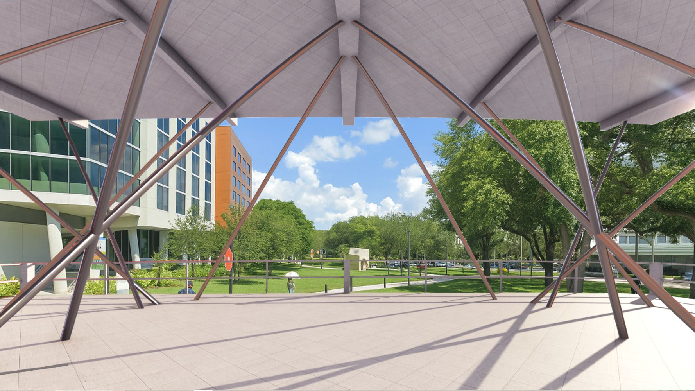

Architecture portfolio
Selected
work.
An architecture portfolio presenting selected work by Grace Sun.
Explore selected work ↘
Selected projects
Portfolio preview
Project 01
Meditation Center
A meditation center designed as a quiet retreat focused on calm, reflection, and spatial rhythm. The project explores how structure, light, and framed views can create a more peaceful experience while maintaining a strong architectural identity.

Project 02
Architectural Photography
A selected architectural photography study focused on form, structure, material, light, and perspective. The images explore how buildings can be read through composition and visual framing rather than only through drawings or plans.

Project 03
Youth Center
A youth center designed to support gathering, learning, and everyday social activity. The project combines open community spaces, shaded outdoor areas, and flexible programs to create an environment that feels welcoming and active.